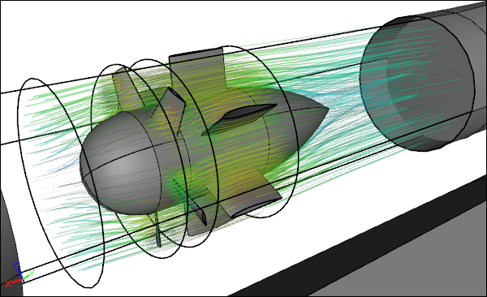

The theme for this month's newsletter is seeing the invisible. Whether you want to better see your Computational Fluid Dynamics (CFD) results, or you want to see the airflow around your vehicle in full technicolor, then this is the newsletter for you. OK, the vehicle thing, with Colorful Fluid Dynamic Paint was an April Fools' joke, but you already knew that, right?
Transparent Streamlines Reveal Otherwise Hidden Geometry